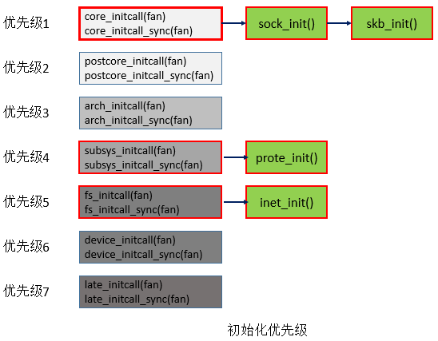

在上一篇博客介绍了do_initcall_level()函数依次取出函数指针数组initcall_levels[]中所有的函数指针，并对这些函数指针所指向的函数进行初始化。但还没说初始化的是什么函数，下面就说说初始化函数本身。
网络协议栈的初始化是有先后顺序的，数组initcall_levels[]中元素的先后顺序代表了初始化函数的优先级。下面通过图明确给出初始化的先后顺序，优先级1表示会最先被调用，图中标有红框的是本次要介绍的内容。

sock_init()
最先要说的是sock_init(void)
net_sysclt_init()
为方便后面的理解，这里先给出一个ctl_table结构体介绍，这个结构体是用于注册内核参数的，内核参数的具体注册方法参考博客Linux系统内核参数的添加方法
skb_init()
|
|
init_inodecache()
|
|
register_filesystem()
|
|
总结
主要介绍了套接字初始化函数sock_init()的实现细节，比如注册内核参数、创建高速缓存、注册socket类型的文件和挂载文件系统。还有些细节没有介绍到，一是知识有限，二是限于篇幅。下一篇博客会介绍套接字的注册。